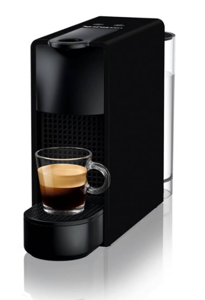
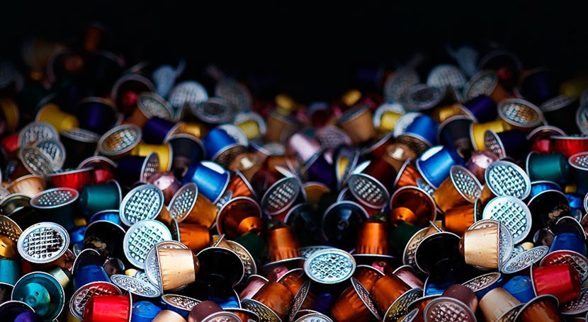
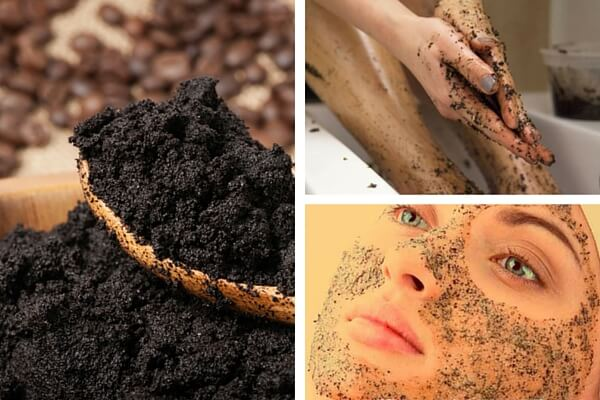

La búsqueda de un uso responsable del café restante
Mientras nuestra técnica de molienda y prensado iba mejorando, nuestro recipiente de café utilizado crecía, se estaba llenando, era hora de pensar que podríamos hacer con esto. Como todos, nuestro comienzo en café tal vez fué con el instantáneo, para luego pasar a café molido, en grano, en casa, o en la de un amigo, para luego probar ir hacia el café de especialidad en un local e irse involucrando en el sabor y preparación, y finalmente experimentar y tener tu propio gusto y rutina de preparación, pero esta historia no tiene que ver con como el café nos ha enamorado, o cuales fueron nuestros metodos de preparación preferido a lo largo del tiempo, sino más bien en cómo usar de forma responsable nuestros residuos y excedentes de este elixir. La primera inquietud (y así, me salto varios años de pruebas, ensayos y errores), es cuando tenía una maquina nesspreso, la verdad muy ágil, rápida de buena construcción y que da unos resultados bastante satisfactorios (para espressos de 30ml), pero estas "capsulas" finalmente contienen un residuo orgánico, que es difícil de obtener, puesto contienen a lo más 7gramos cada una, por lo que ya el solo abrirlas nos da un resultado bastante pobre así, y luego de probar distintas capsulas nos dimos cuenta que el uso de estas, genera una gran cantidad de material "no usable" sobre todo si no reciclas   las capsulas (nesspreso solo recicla las capsulas originales, de aluminio). Esto ya provocó un ruido en nuestra cabeza llena de interrogantes. Así no quedo una opción más directa que empezar con una máquina de espresso casera, por supuesto que no voy a referirme a ellas, ni tampoco enalzar su calidad ni uso, etc. pero si volvemos a un punto, estamos generando café usado, orgánico, y probablemente más que con las capsulas, pero esta vez, directo, sin necesidad de limpiar o abrir nada, tenemos entonces, un contenedor (o knock box si quieren), lleno de café, semanal, entonces, primero lo usual: abono para las plantas de la familia, luego, pero esto sigue creciendo y no se pueden llenar los maceteros de café, hay que buscar otra solución. Con todo esto en el tintero, nos damos cuenta que hay muchas opciones de uso cosmético para este café, en cremas exfoliantes, terapias de masaje, y jabones, ahí es donde nace la idea, el jabón,  por sus propiedades puede mantener el café en buen estado por más tiempo, y la glicerina a parte de tener sus propias características, hace un muy bien equipo con el café, entonces? solo queda averiguar, consultar, empaparse de conocimiento al respecto, y crear el mejor jabón de café. Estamos muy contentos que nuestros amigos y familia puedan disfrutar de este producto, es bastante duradero y contribuye a un uso responsable de los residuos de café. Pruébalo y danos tu opinión, seguimos aprendiendo y experimentando nuevas recetas, para entregar lo más adecuado a las necesidades de la gente consciente con el medio ambiente, amantes de café, y por supuesto preocupada de su bienestar personal y el cuidado de su piel.